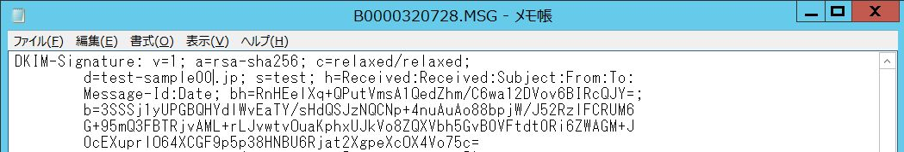

EPSTDKIMを使ってDKIMによる送信ドメイン認証を導入する方法について updated!
EPSTDKIMを使ってDKIMによる送信ドメイン認証を導入するには、「サポート２」より ドメイン認証（DKIM）アドオンツール EPSTDKIM v1.04a をダウンロードするか、新たに公開した送信ドメイン認証（DMARC）アドオンツール EPSTDMARC v1.06c をダウンロードしてください。
2020年2月よりSMTP受信時において DMARC/DKIM/SPF すべてのチェックが可能な送信ドメイン認証（DMARC）アドオンツール EPSTDMARC v1.00 を公開、2023年12月 EPSTDMARC v1.04 にアップ、2024年1月 EPSTDMARC v1.05c にアップ、2024年6月 EPSTDMARC v1.06c にアップしました。「サポート２」の「ダウンロード−[32bit][64bit]ツール・ユーティリティ」をご覧ください。
この EPSTDMARC v1.06c を導入すれば、DKIMのチェックが可能な送信ドメイン認証アドオンツール EPSTDKIM や、SPFのチェックが可能な送信ドメイン認証（SPF）アドオンツールの組み込みは不要になります。送信ドメイン認証 DMARC へ対応したヘッダ記載（シグネチャ及び判定ヘッダ）機能と履歴ファイル作成機能があり、メール受信時にはこのプログラムのみで SPF/DKIM/DMARC の3つすべての判定結果のヘッダへの記載が可能になるほか、かつメール送信時はDKIM用のシグネチャヘッダの記載を実施することができるようになります。詳細は EPSTDMARC に付属する readme.html をご覧ください。
参考・［EPSTDKIMのインストールと設定］
- 初めに、署名、検証用の秘密鍵、公開鍵を作成するため、コマンドプロンプトよりインストールフォルダへ移動し "sign.bat" を実行します。
実行書式
sign.bat [セレクタ名]
実行例
sign.bat test
上の例だとフォルダ内にtest.private（秘密鍵）、test.public（公開鍵）の２つのファイルが作成されることを確認してください。
- 次に、作成した公開鍵（test.public）をDNSサーバに定義します。
test.public をエディタで開き、先頭行の "-----BEGIN PUBLIC KEY-----" および最終行の "-----END PUBLIC KEY-----" をカット、各行末の改行コード（LFコード）を除去し、１行にしたものを定義します。
なおWindowsのメモ帳では、LFコードを改行と見なせないため、１行につながっているように見えます。エディタでの編集が確実です。
作成された公開鍵（test.public）の例
-----BEGIN PUBLIC KEY-----
MIGfMA0GCSqGSIb3DQEBAQUAA4GNADCBiQKBgQCtK9uRps4+UCQ8+bMtK5l3fZQP
[中略]：
[中略]：
oQm5sqLjz2eU76GlJwIDAQAB
-----END PUBLIC KEY-----
↓
ピンク部分の先頭行と最終行をカット、各行末の改行コード（LFコード）を削除し１行にした例
MIGfMA0GCSqGSIb3DQEBAQUAA4GNADCBiQKBgQCtK9uRps4+UCQ8+bMtK5l3fZQP....oQm5sqLjz2eU76GlJwIDAQAB
［DNSサーバ（BIND）への設定例（試験運用時 t=y）］
test._domainkey.xxxxx.jp. 300 IN TXT "v=DKIM1; k=rsa; t=y; p=MIGfMA0GCSqGSIb3DQEBAQUAA4GNADCBiQKBgQCtK9uRps4+UCQ8+bMtK5l3fZQP...[中略]....oQm5sqLjz2eU76GlJwIDAQAB"
［DNSサーバ（BIND）への設定例（正式運用時 t=y を削除）］
test._domainkey.xxxxx.jp. 300 IN TXT "v=DKIM1; k=rsa; p=MIGfMA0GCSqGSIb3DQEBAQUAA4GNADCBiQKBgQCtK9uRps4+UCQ8+bMtK5l3fZQP...[中略]....oQm5sqLjz2eU76GlJwIDAQAB"
［DNSサーバ（Windows Server）への設定例（試験運用時 t=y）］
「その他の新しいレコード」→「Text（TXT）」
エイリアス名：e0001
完全装飾ドメイン名（FQDN）：e0001._domainkey.test-sample00.jp
テキスト："v=DKIM1; k=rsa; t=y; p=MIGfMA0GCSqGSIb3DQEBAQUAA4GNADCBiQKBgQDcnEGdTHJL3KQg6byIqejf+/qn...[中略]....w2J0nXPU5qwn7NpMrwIDAQAB"
［DNSサーバ（Windows Server）への設定例（正式運用時 t=y を削除）］
「その他の新しいレコード」→「Text（TXT）」
エイリアス名：e0001
完全装飾ドメイン名（FQDN）：e0001._domainkey.test-sample00.jp
テキスト："v=DKIM1; k=rsa; p=MIGfMA0GCSqGSIb3DQEBAQUAA4GNADCBiQKBgQDcnEGdTHJL3KQg6byIqejf+/qn...[中略]....w2J0nXPU5qwn7NpMrwIDAQAB"
- 次に、DKIMの実行動作を規定する定義ファイル dkim.iniをメモ帳などのエディタで開き、署名する接続許IPアドレスや送信元エンベロープを定義します。
［epstdkim.ini ファイル定義例］
（書式）
' [Sign IP or エンベロープFROM][tab][ACTION]
' [ACTION]は,none,verify,セレクタ（DNSに定義した名称）のいずれかを記載
' none = 何もしない
' verify = 検証
' その他の文字列 = 記載した文字列をセレクタとして署名
' @e-postinc.jp[tab]test ←エンベロープの送信元が @e-postinc.jp の全てのメールアドレスにセレクタ名 test で署名
' *[tab]verify ←上記以外、外部からのインバウンドメールを検証（検証不要の場合は削除またはnoneを指定）
※内部からの送信時にDKIMのヘッダを挿入せず、外部からのインバウンドメールについて検証のみしたいときは、最終行の *[tab]verify のみを有効にします。
（例）
@test-sample00.jp[tab]test
192.168.0.xx[tab]test
127.0.0.1[tab]none
*[tab]verify
［EPSTDKIMの動作確認方法］
- 署名と検証
コマンドプロンプトよりプログラムインストールフォルダへ移動します。
任意のEML形式のメールデータファイルを用意し、以下の命令を実行します。EML形式のファイルであればよいので、E-Postシリーズで管理している拡張子.MSGのメールデータファイルでもかまいません。
（書式）
epstdkim <送信元IP> <送信元エンベロープ(From address)> <EML形式のファイル名> <実行したマシン名FQDN>
（実行例）
epstdkim 192.168.0.xx info@test-sample00.jp B0000320738.MSG Epost01
実行すると、指定したEML形式のファイル名のヘッダに、"DKIM-Signature: " に続くヘッダが記載されます。
例では、epstdkim.iniファイルで指定した、送信元IPもしくは送信元エンベロープでアクションとして "test" が記載されている行と一致した場合にヘッダが追加されることになります。

また、"verify" が記述されている行と一致した場合、"X-Authentication-Results: " のヘッダが追加されます。
［E-Post Mail Server / E-Post SMTP Serverシリーズへのアドイン方法］
- epstrs.exeのバージョンは、v4.78以降で利用可能になります。バージョンが古い場合は動作しませんのでご注意ください。
- 以下のレジストリ値を新規に作成し、値を設定します。
HKEY_LOCAL_MACHINE
→ SYSTEM
→ CurrentControlSet
→ Services
→ EPSTRS
→ OnDKIM
DWORD値 (SPF確認の有無 0:しない / 1:する）1 を設定
→ DomainAUTHDKIM
文字列 (フルパスでepstdkim.exeを指定。メールサーバのプログラムインストールフォルダ（空白の含まれるパス）に保管した場合はショートパス名 "C:\PROGRA~1\EPOST\MS\epstdkim.exe" を設定）
- 設定後、EPSTRSを再起動します。
- ログの取得について
epstdkim.exe インストールフォルダ下に "dkimlog" という名称でフォルダを作成すると、それ以降ログが出力されます。
"dkimlog" フォルダを削除することにより、ログは記録されなくなります。
［関連リンク］
OPENSSL
LIBDKIM